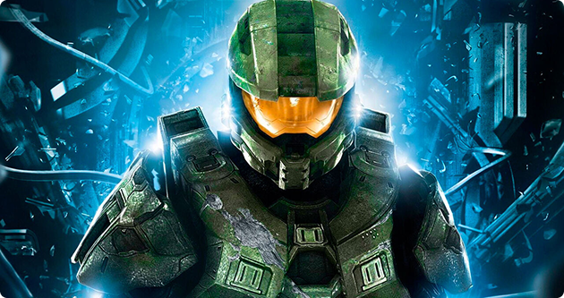
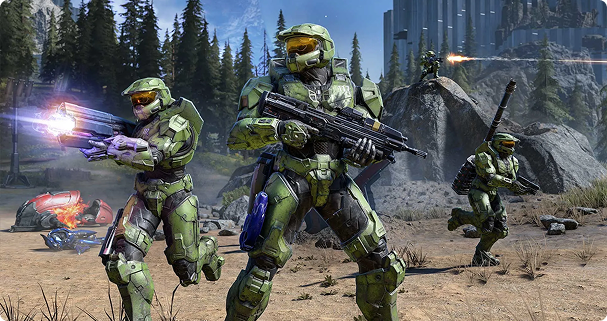
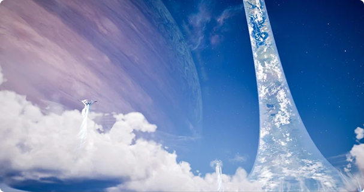
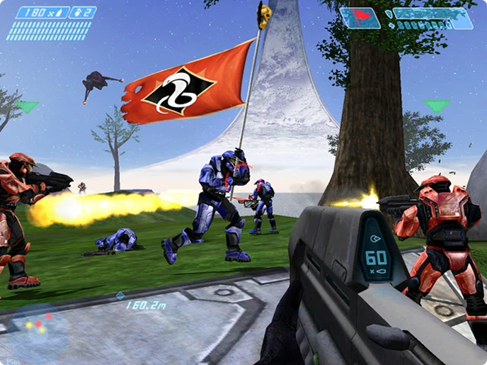
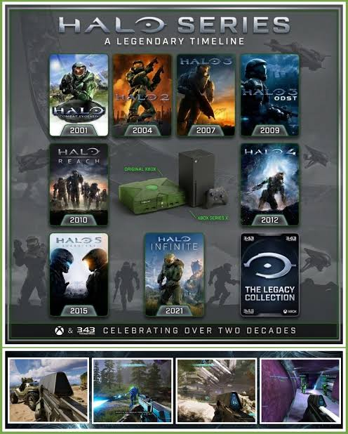

Importancia en la industria
Descubre cómo Halo marcó una época y dejó su huella en la industria de los videojuegos.
Ver

Halo nació como un proyecto de Bungie, un estudio de Chicago que había creado la serie Marathon en Macintosh. Originalmente, el juego iba a ser un título de estrategia en tiempo real para Mac, pero el proyecto cambió de rumbo hasta convertirse en un shooter en primera persona. En 2000, Microsoft adquirió Bungie, y el juego pasó a ser una pieza clave en el lanzamiento de su nueva consola, Xbox. Halo: Combat Evolved salió en noviembre de 2001 y se convirtió en uno de los títulos de lanzamiento más importantes de la consola. Su sistema de juego equilibrado, con dos armas a la vez, escudos regenerativos y enemigos variados, marcó una referencia para los shooters de consola.

La historia sigue al Jefe Maestro (John-117), un Spartan-II, un supersoldado de la UNSC (Naciones Unidas del Espacio). Su misión principal es detener a la Alianza Covenant, una coalición de razas alienígenas que busca eliminar a la humanidad. El conflicto da un giro cuando se descubre el Anillo, una megaestructura creada por los Forerunners, y la amenaza de los Flood, un parásito capaz de absorber a cualquier ser vivo. Este universo, con su ambientación de ciencia ficción, su música icónica compuesta por Martin O'Donnell y Michael Salvatori, y la figura de la IA Cortana, se convirtió en uno de los sellos de la marca.
La secuela, Halo 2, salió en 2004 y terminó con un final de cliffhanger que generó expectativas enormes. Además, fue fundamental para el crecimiento del juego en línea en consolas gracias a Xbox Live, que permitió que millones de jugadores compitieran entre sí. Halo 3 (2007) cerró la trilogía original de Bungie y fue un éxito comercial rotundo, con cifras de ventas récord en su lanzamiento. Después llegaron Halo 3: ODST (2009) y Halo: Reach (2010), que sirvió como precuela y fue el último juego que Bungie desarrolló para la saga.


Tras la salida de Bungie, Microsoft confió la franquicia al estudio 343 Industries, creado para esa tarea. Halo 4 (2012) mostró la evolución de Cortana y la de los Forerunners, y Halo 5: Guardianes (2015) profundizó en el Jefe Maestro, aunque recibió críticas por su enfoque en el multijugador y su narrativa. Halo Infinite (2021) fue un cambio importante, con un mundo más abierto, pero su lanzamiento tuvo problemas técnicos y de contenido que obligaron al estudio a hacer muchas actualizaciones posteriores.
La saga también se expandió a otros formatos. Entre los juegos derivados destacan Halo Wars (2009) y Halo Wars 2 (2017), de estrategia en tiempo real. Además, la franquicia tuvo novelas, cómics, animaciones como Halo Legends y cortometrajes. En 2022 se estrenó una serie de televisión live-action en Paramount+, que tuvo dos temporadas antes de ser cancelada en 2024.
Tras la cancelación de la serie, la franquicia siguió su camino por otros medios. Halo Studios, nombre que adoptó 343 Industries en 2024 al reorganizar sus equipos, mantuvo vivo el universo con actualizaciones, eventos temporales y nuevas temporadas de contenido para Halo Infinite.
Aunque el juego sufrió críticas por su lanzamiento y por la falta de ciertas funciones que los fans esperaban, la comunidad siguió activa gracias a los modos multijugador, a los creadores de contenido y a la permanencia de títulos como The Master Chief Collection, que reúne los juegos principales de la saga y sigue siendo una forma popular de revivir la historia del Jefe Maestro.
El interés por la franquicia también se reflejó en las decisiones de marketing y de plataforma. Microsoft empezó a llevar la marca a otros sistemas, en un movimiento que marcó un cambio respecto a la época en que Halo era casi un sinónimo de Xbox. Este giro reavivó el debate entre los jugadores sobre el futuro de la saga, sobre si debía seguir una línea más cercana a los juegos clásicos de Bungie o avanzar hacia nuevas ideas, y sobre cómo equilibrar la nostalgia con la necesidad de atraer a una audiencia más joven que no vivió los primeros lanzamientos.

Si nunca has jugado Halo, la saga puede parecer enorme. La forma más sencilla de entender la historia del Jefe Maestro es recorrer estos cinco juegos en el orden en que ocurren dentro del universo, no en el que salieron a la venta. Empezar por Reach te presenta la guerra contra el Covenant y te deja justo en la puerta de la primera entrega. Todos están reunidos en The Master Chief Collection.

Descubre cómo Halo marcó una época y dejó su huella en la industria de los videojuegos.
Ver
El contenido protegido por derechos de autor que pueda aparecer en este sitio, como imágenes, capturas de pantalla, ilustraciones, logotipos, fragmentos audiovisuales o referencias, se utiliza únicamente como material de apoyo, comentario, análisis, crítica, documentación o demostración de los temas tratados. La inclusión de estos materiales no pretende reclamar su propiedad ni transferir ningún derecho sobre ellos.